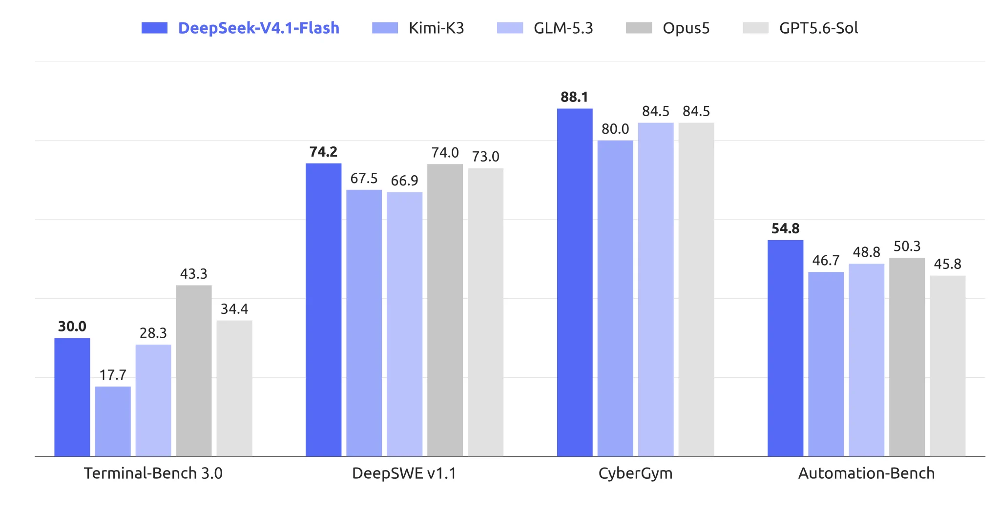

01 twitter.com 게시일 2026.09.10
DeepSeek, V4.1 Flash 첫선

DeepSeek가 새 모델 라인을 시작했다. 이번 모델은 크기를 줄이면서도 이미지 이해를 기본 기능으로 넣는 데 초점을 맞췄다. 발표문은 속도와 처리량 개선을 앞세웠다. 다만 세부 성능 수치와 가격은 아직 보이지 않는다.
핵심 브리핑
DeepSeek는 새 아키텍처 패밀리의 첫 모델로 V4.1 Flash를 공개했다. 이 모델은 패밀리 안에서 가장 작은 모델이다. DeepSeek는 이 모델에 비주얼 이해를 기본으로 넣었다고 밝혔다.
DeepSeek는 V4.1 Flash를 더 빠르고 효율적인 모델로 소개했다. 발표문은 빠른 추론과 높은 처리량을 목표로 잡았다고 적었다. 더 큰 모델로 확장할 수 있는 구조라는 설명도 붙었다.
- 새 아키텍처 패밀리의 첫 모델
- 패밀리 내 가장 작은 모델
- 비주얼 이해 기본 탑재
- 목표: 빠른 추론, 높은 처리량, 대형 모델 확장
맥락 읽기
공개된 내용만 보면 이번 발표의 초점은 상세 스펙보다 방향 제시에 있다. DeepSeek는 작은 모델에도 이미지 이해를 넣고, 속도와 처리량을 강조했다. 이는 고성능 단일 모델보다 용도별 라인업을 넓히려는 전략으로 읽힌다.
다만 공개문에는 가격, 배포 방식, 라이선스, 벤치마크 수치가 없다. 실제 경쟁력은 후속 공개가 나와야 가늠할 수 있다.
업계의 움직임
Reddit의 r/LocalLLaMA에서 이 모델 공개가 주간 상위 화제로 올라왔다. 일부 커뮤니티 글은 새 벤치마크에서 Astra를 앞섰다고 언급했지만, 여기 제시된 발췌만으로는 측정 주체와 조건을 확인할 수 없다. 지금 단계에서는 커뮤니티 관심이 빠르게 붙었다는 점까지만 확인된다.
시사점과 체크포인트
우리 회사가 먼저 볼 부분은 속도와 처리량이 실제 업무 자동화에 주는 이익이다. 문서 분류, 이미지 포함 민원 처리, 내부 포털 검색 보조처럼 응답량이 많은 업무에 맞을 수 있다.
확인할 질문은 분명하다.
- API 제공 여부와 과금 기준이 공개됐는가
- 사내 서버 설치나 전용망 배포가 가능한가
- 한국어 문서와 이미지에서 성능이 검증됐는가
- 금융 데이터 반출 통제와 감사 로그를 지원하는가
아직 성능 수치와 운영 조건이 없다. 기술 검토팀은 후속 발표가 나올 때까지 후보군으로만 관리하는 편이 안전하다.
주요 용어
원문 정보
제목: DeepSeek v4.1 Flash
게시일: 2026.09.10
출처 URL: https://twitter.com/deepseek_ai/status/2097930608790167907